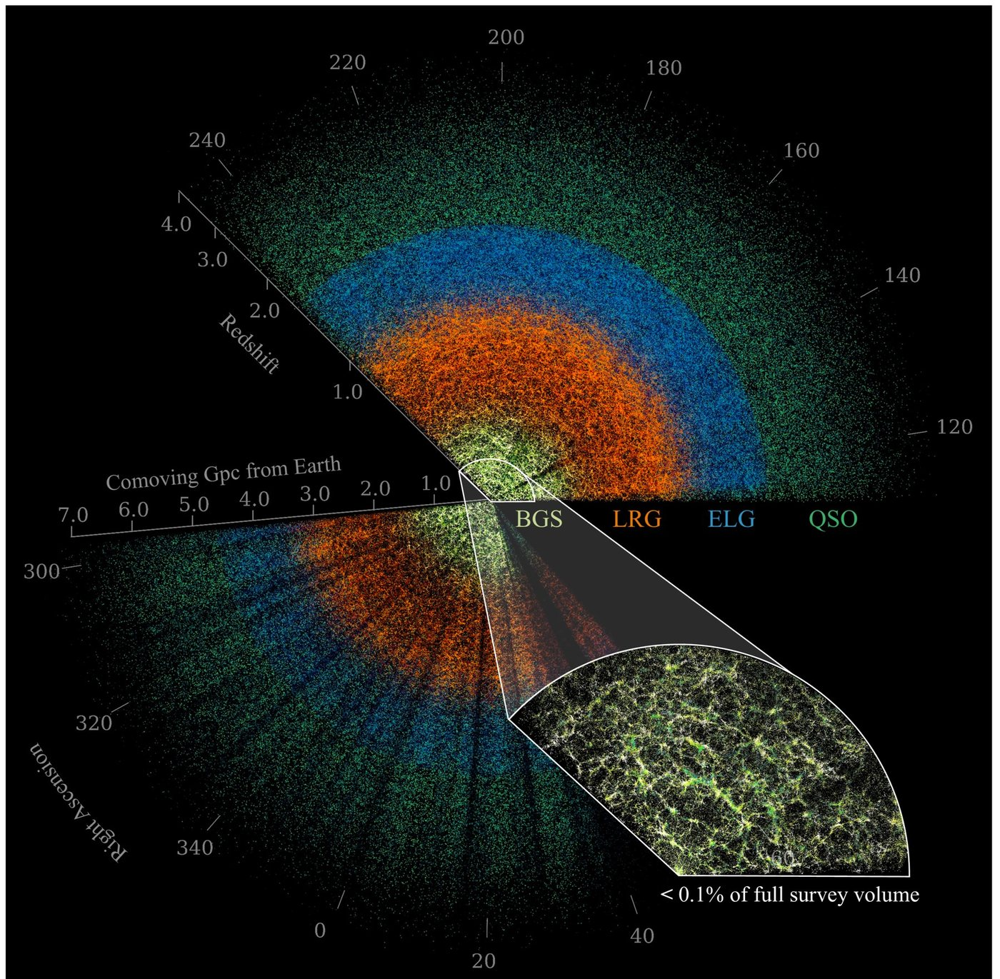

DESI Outreach
How the Dark Energy Spectroscopic Instrument turns starlight from distant galaxies into a three-dimensional map of the universe
The Dark Energy Spectroscopic Instrument is measuring the expansion history of the universe by mapping where galaxies are. These pages explain how that actually works — written for anyone curious, with no assumption of a physics background.

Pages
How DESI works
The light path from a distant galaxy to a charge-coupled device: the Mayall telescope, 5,000 robotic fiber positioners, the spectrographs, and what actually lands on a CCD — with simulations and the Python source that produced them.
Galactic tracers
The four kinds of object DESI measures — bright galaxies, luminous red galaxies, emission-line galaxies and quasars — what each one looks like, and the spectral features that give away its distance.
Results
What the map has actually shown: baryon acoustic oscillations as a standard ruler, full-shape clustering, the Lyman-α forest, and what they jointly say about dark energy and the neutrino masses.
Data Release 1
18.7 million high-confidence redshifts from the first thirteen months of the survey — the largest three-dimensional map of the universe yet made, and public.
The Hubble tension
Two ways to measure how fast the universe expands, and two answers that do not overlap. The distance-ladder network, thirteen routes through it, and what each one gives for H₀.
Cosmology Calculator with BAO Scale
Distances, ages and the angular BAO scale at any redshift, over a cosmic timeline you can jump through — radiation-matter equality, the CMB, the first stars, cosmic noon. Enter H₀, the matter density and the sound horizon; get DM/rd and DH/rd in DESI’s own convention.
Evolving Dark Energy Calculator
Set w0 and wa and see what moves against flat ΛCDM — the expansion rate, the age, the distances and θBAO, with Ωm and H₀ fitted to the DESI BAO distances across a w0–wa plane you sweep with the mouse.
The expansion has no center
Click anything on a real DESI Legacy Surveys sky and it stays put while everything else moves away from it, faster the further off it is. Click something else and that becomes the center instead.
The expansion has no center: on a map
Every incorporated place in the lower 48 — 29,460 of them. Click one and the country expands about it; click another and that becomes the center instead — the point being that you cannot tell from the pattern which was chosen.
ΛCDM
The standard cosmological model in six parameters, the cosmic timeline from the Planck era to the dark-energy era, and how the 150 Mpc standard ruler is frozen in at recombination.
The Boston University DESI group site carries the group pages and internal resources.